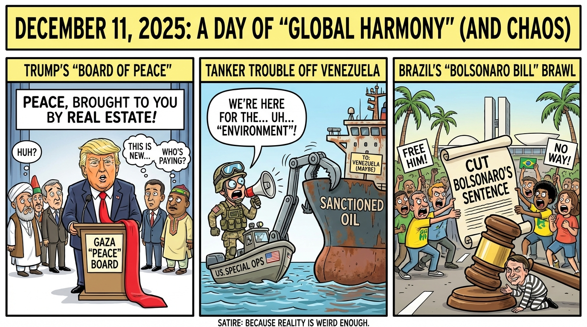

Global Controversies Ignite X: Trump's Gaza peace plan to include global leaders, US seizes tanker off coast of Venezuela, Trump says, and Bill that could reduce Brazilian ex-President Jair Bolsonaro's prison time advances in Congress
Published on 2025-12-11

World
- Trump's Gaza peace plan to include global leaders
Trump announced that the Gaza 'Board of Peace' will bring together kings, presidents, and other top leaders, with membership revealed early 2026 as part of his bold push for a Gaza deal.
USA
- US seizes tanker off coast of Venezuela, Trump says
A combined FBI, DHS, and Coast Guard operation boarded a sanctioned VLCC cargo ship carrying oil from Venezuela to Iran, making it the largest seizure of its kind and a significant escalation in Washington's pressure campaign.
Brazil
- Bill that could reduce Brazilian ex-President Jair Bolsonaro's prison time advances in Congress
The lower chamber approved a proposal to run Bolsonaro's coup-related sentences concurrently, shorten parole thresholds, and potentially cut the 27-year term despite chaotic protests and Lula's veto threat.
Topic Index
- World: Trump's Gaza peace plan to include global leaders — Trump announced that the Gaza 'Board of Peace' will bring together kings, presidents, and other top leaders, with membership revealed early 2026 as part of his bold push for a Gaza deal
- USA: US seizes tanker off coast of Venezuela, Trump says — A combined FBI, DHS, and Coast Guard operation boarded a sanctioned VLCC cargo ship carrying oil from Venezuela to Iran, making it the largest seizure of its kind and a significant escalation in Washington's pressure campaign
- Brazil: Bill that could reduce Brazilian ex-President Jair Bolsonaro's prison time advances in Congress — The lower chamber approved a proposal to run Bolsonaro's coup-related sentences concurrently, shorten parole thresholds, and potentially cut the 27-year term despite chaotic protests and Lula's veto threat